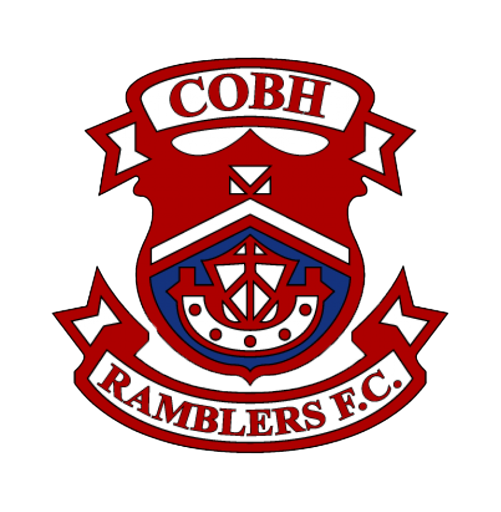
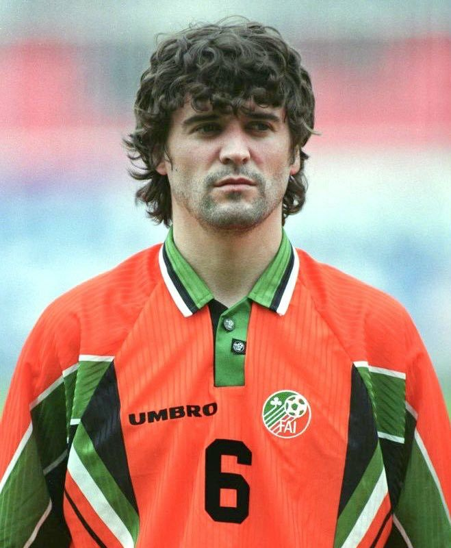
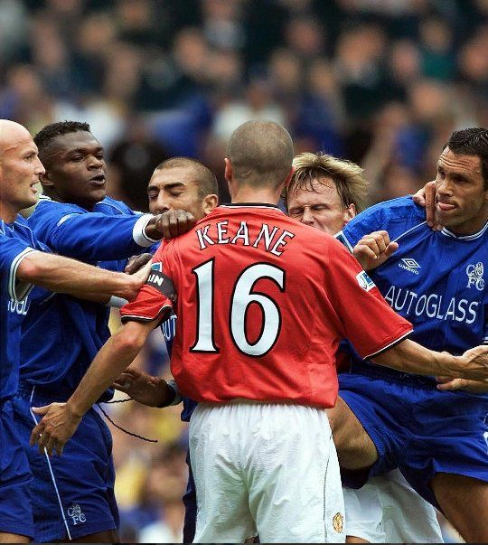
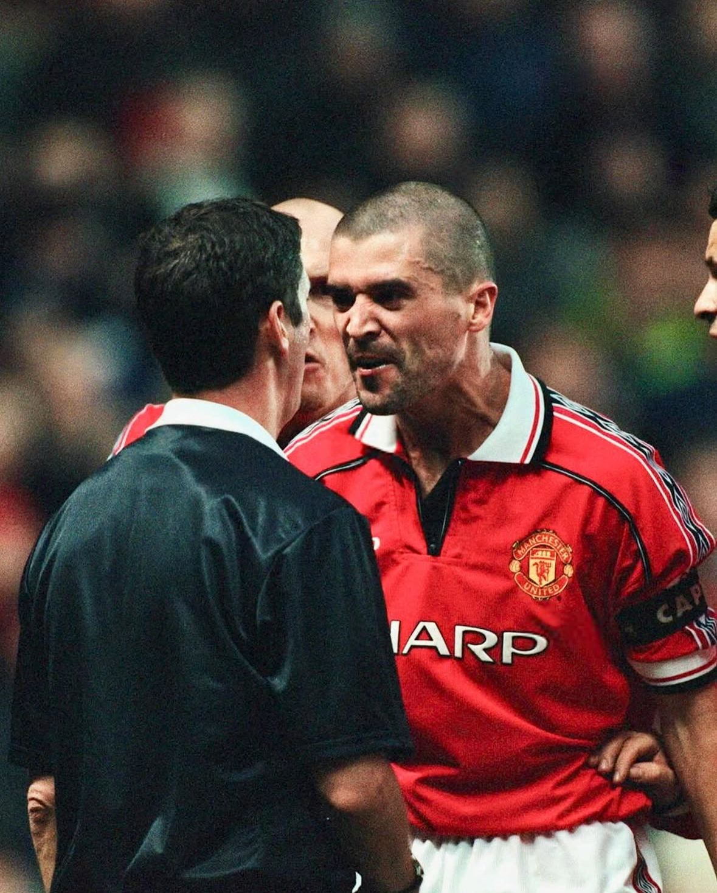
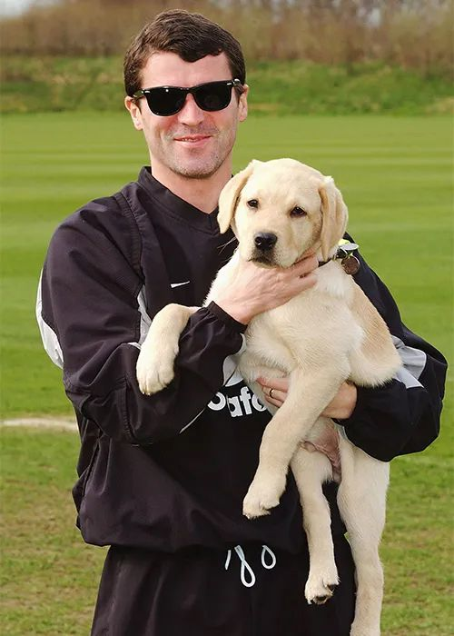
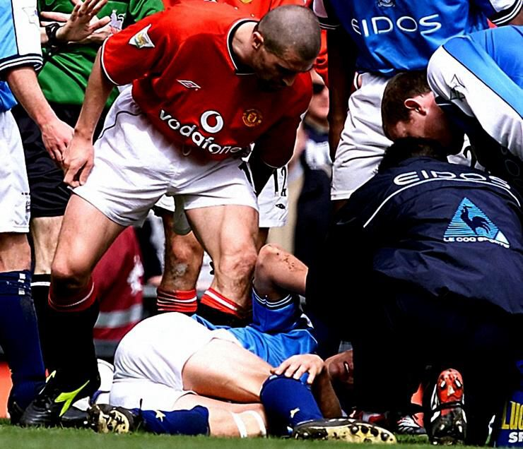
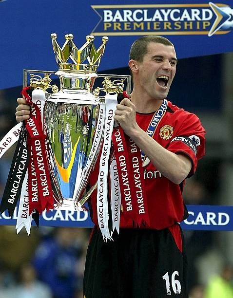

From the streets of West Cork to the driving force behind Manchester United’s dominance, Roy Keane was leadership in its rawest form. Born in 1971, he rose through the ranks at Nottingham Forest before becoming the heartbeat of Sir Alex Ferguson’s great United side. Relentless, uncompromising and utterly fearless, Keane set the standard for intensity and accountability. His performance against Juventus in the 1999 Champions League semi-final remains one of the greatest captain’s displays ever, sacrificing himself for the team. Though controversy followed him throughout his career, his influence was undeniable. Roy Keane didn’t just play to win — he demanded it from everyone around him.




Champions League (1) |

Premier League (7) |

FA Cup (4) |

Scottish Premiership (1) |

Scottish League Cup (1) |
| 1999 | 1994, 1996, 1997, 1999, 2000, 2001, 2003 |
1994, 1996, 1999, 2004 | 2006 | 2006 |





